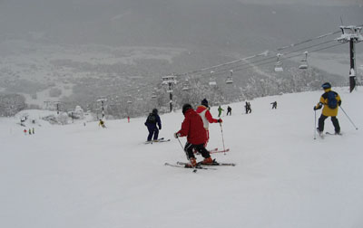

|
|||||||||||||||||||||||||||
|
八方尾根初滑り |
| 開 催 日 | ２００９年１２月１９〜２１日 | |||
| リーダー | 松澤 | |||
| 報 告 者 | 高井（紀） | |||
| HP制作者 | 高井（紀） | |||
| 参加者数 | ７名 （会員６名、ゲスト１名） | |||
| 恒例の八方尾根初滑りは、新しい道具の使い勝手や特性を知り、スキー技術の確認など、シーズン初めとして大事な行事である。今回は松澤さんが新調のスキーとブーツ、藪田さんが新調のブーツを持ち込み試していた。 |
| パノラマコースでの集合写真 |
| １〜３日目 |
| 週の初めは全てのゲレンデで滑降不可だったが、3日ほど前からの大雪で、どこも雪だらけ。 積雪は兎平でおよそ１６０ｃｍ 咲花で８５ｃｍ。リフトの雪の除去が間に合わずゴンドラのほかに動くリフトは数本だった。 天候は曇り、雪。リーゼンより下方の視界はそれほど悪くなく、風が強い時もゴンドラが止まるほどではなかった。 初日の雪は少し重めだったが、２日目、３日目の雪質、コースコンディションは深雪、圧雪ともに極めて良かった。 |
| A | ||
| シャトルバス停からスキー場を見る | バスでスキー場へ |
 |
A |  |
| 国際ゲレンデ・リフト | パノラマコースを滑る |
| A | ||
| ゴンドラ終点（後：兔平ゲレンデ） | セントラルコースを滑りゴンドラへ |
| 宿はいつもの「あずま」。たっぷりとアフタースキーを楽しむ。 |
| 街の雪景色 |
| A | ||||
| ゴンドラ乗り場バス停の氷柱 | 諏訪神社の鳥居 |
| 降雪が殆どなく滑れるか危ぶまれた初滑りが、絶好のコンディションの中で出来た。 参加者は、思いがけない大雪に嬉しくて、本来の技術の確認を差し置いてあちこちのコースを滑りまくった。 |